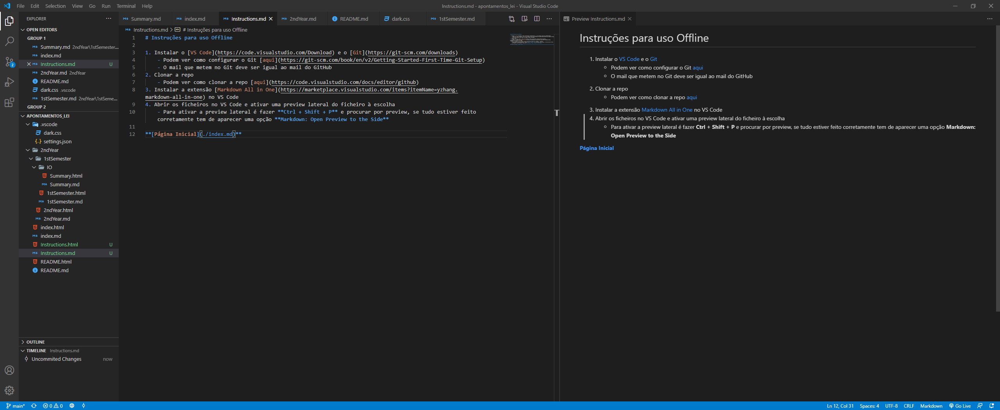

Instruções para uso Offline
- Instalar o VS Code e o Git
- Podem ver como configurar o Git aqui
- O mail que metem no Git deve ser igual ao mail do GitHub
- Clonar a repo
- Podem ver como clonar a repo aqui
- Instalar a extensão Markdown All in One no VS Code
- Abrir os ficheiros no VS Code e ativar uma preview lateral do ficheiro à escolha
- Para ativar a preview lateral é fazer Ctrl + Shift + P e procurar por preview, se tudo estiver feito corretamente tem de aparecer uma opção Markdown: Open Preview to the Side
Exemplo:

Página Inicial